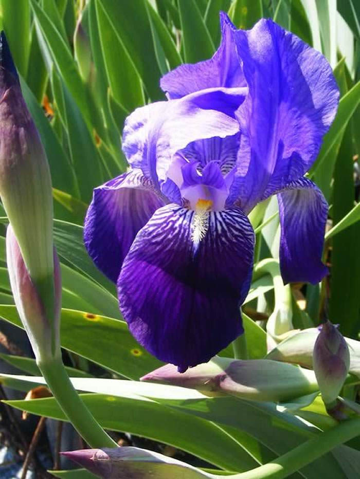

Ayuntamiento de Senés
JARDIN BOTANICO DE ESPECIES AUTOCTONAS DE SENES

Iris germanica

El lirio común (Iris germanica) es una planta herbácea perenne muy apreciada en jardines mediterráneos por la belleza de sus flores y su resistencia. Se caracteriza por su crecimiento a partir de rizomas y por su porte elegante.
Presenta hojas largas, estrechas y de forma acintada, de color verde grisáceo, que crecen en abanico desde la base. Sus flores son grandes y vistosas, con pétalos de colores variados, siendo el violeta y el púrpura los más frecuentes.
El lirio común es originario de Europa y se encuentra ampliamente distribuido en jardines y espacios cultivados. Se adapta bien a climas templados y a suelos bien drenados.
En zonas como Senés, es frecuente en jardines y espacios ornamentales, donde aporta color y estructura al paisaje vegetal.
El lirio ha tenido usos tradicionales en perfumería y medicina, especialmente a partir de sus rizomas. Se le atribuyen propiedades aromáticas y, en algunos casos, aplicaciones en preparados tradicionales.
Sin embargo, su uso medicinal es limitado y debe realizarse con conocimiento adecuado.
El lirio simboliza la pureza, la nobleza y la elegancia. A lo largo de la historia ha sido un símbolo cultural en diversas civilizaciones, asociado a la belleza y la perfección.
Su forma característica lo convierte en una de las flores más representativas del arte y la tradición.
En Senés, el lirio se críaba en las fisuras de las rocas, florece en primavera con flores muy llamativas, bonitas y con perfume agradable, por lo que se utilizaban de forma ornamental, sobre todo en la semana santa.
con sus raices se hacían purgantes muy efectivos.
El lirio común florece en primavera, produciendo flores grandes y llamativas que aportan color al entorno.
El lirio ha sido símbolo heráldico en diversas culturas, como la flor de lis. Además, sus rizomas han sido utilizados en perfumería tradicional.
Es una planta muy valorada por su resistencia y por la belleza de sus flores.